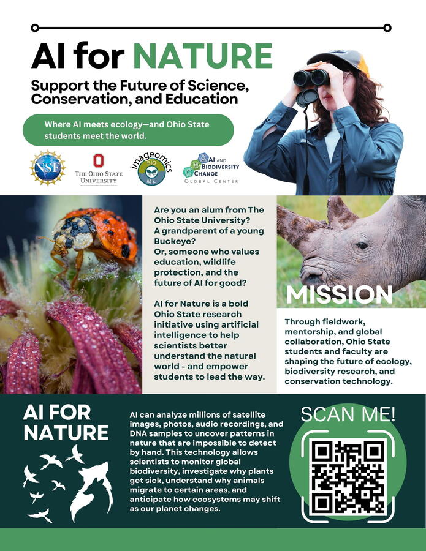
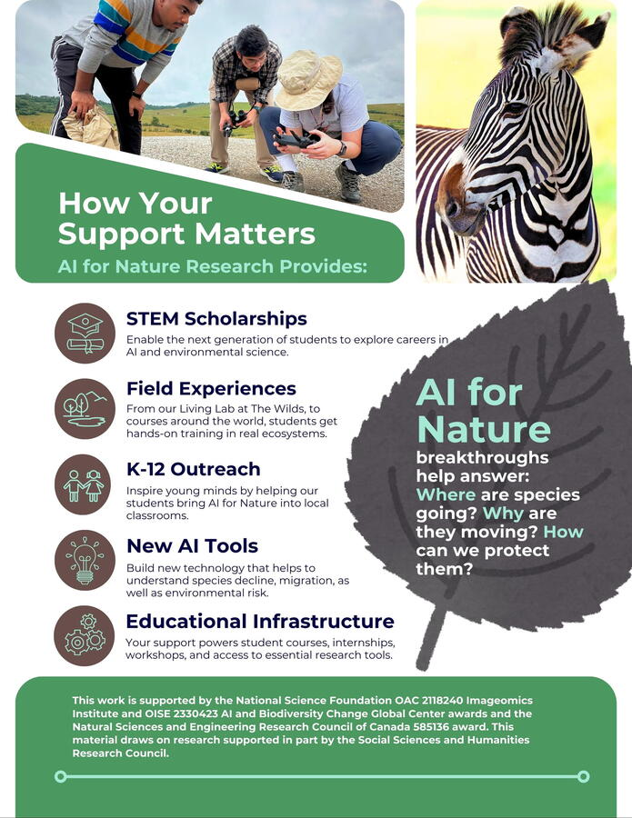

At the Imageomics Institute, we’re not just advancing artificial intelligence—we’re reimagining how it can serve biodiversity, conservation, and ecology.
Through our AI for Nature initiative, we’re building tools to empower researchers to extract scientific insights from the millions of wildlife images shared around the world. From classifying species traits to predicting ecological change, our work opens doors for the next generation of scientists, engineers, and conservationists.
This isn’t just about technology. It’s about education, opportunity, and discovery—investing in young minds to shape a more informed and sustainable planet. Students are at the heart of this mission. AI is the engine. Nature is the guide.
Explore how we’re training the future of science and supporting research that matters:
Imageomics Institute
#AIforNature #Imageomics #STEMEducation #Biodiversity #Ecology #ConservationTech #AI4Science #FutureScientists #MachineLearning #NSFfunded #OhioState